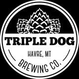

Visit Triple Dog Brewing Co.'s Website
Mike has been brewing beer since he was 19. What began in his garage has developed into a full-fledged operation housed in the new home of Triple Dog Brewery. He said he knew he wanted to open a brewery when he was 21, when him and his wife Erin visited Kettle House Brewing Company in Missoula. The atmosphere and the style of the taproom, mixed with his own passion for brewing, inspired him to found his own. When asked why they decided to open a brewery, Erin said "we love beer."
We just really love beer, and are excited to bring this culture to Havre.
All of our beers are handmade in Havre, Montana by Brewmaster Michael Garrity with a deep passion for quality brews.
Buy A Physical MT Brewery Passport Today!
Tap the Map to Go Back